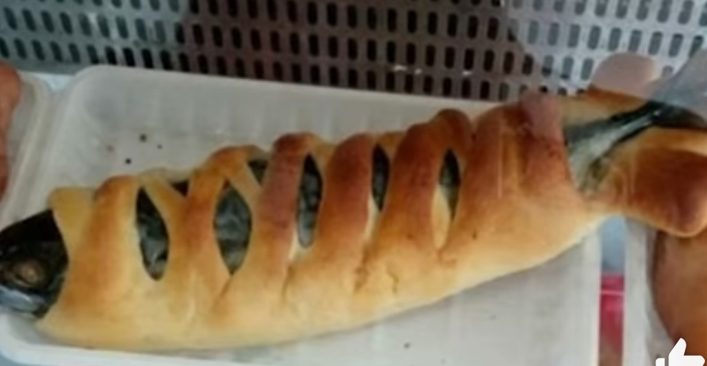

Fish roll!

Description
A sausage roll but instead of mystery meat, you get a whole organic fish!
Serves: 3
Cooking time: 40 minutes
Ingredients
- 1 large organic mackerel
- Puff pastry (premade)
Steps
- Preheat oven to 180deg fan/ 200deg gas
- Lay puff pastry sheet out
- Place whole organic mackerel in the centre of pastry
- Fold ends of the pastry over the fish to create a roll
- Place on a baking tray and into the oven for 25 minutes
- Serve hot or cold
- Cheeky fish roll, perfect for lunch! Yum!
Home